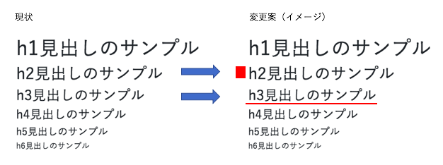
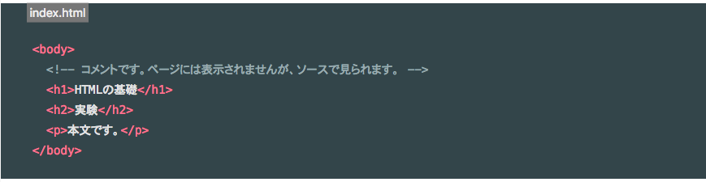
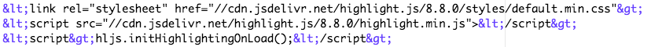
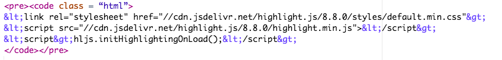

Bootstrapテーマ『Clean Blog」をベースに、記事ページ（post.html９のカスタマイズを行いました。もともと、欧文用にレイアウトされたものであるため、日本語フォントの表示が違和感ないようにカスタマイズを気をつけて行きたいと考えています。 使用ファイル：/d-blog/post.html
body要素のfont-sizeは16px? 14px?
デフォルトでは「20px」で設定されていましたが、日本語のレスポンシブサイトでよく見かける「16px」あたりに設定を変更してみました。h6のfont-sizeが16pxのようなので、ここに合わせるなら14pxも考えられますが、ひとまず16pxで様子をみていきます。ページのイメージを具体的に確認できるよう、各要素（タグ）のサンプルもhtmlに記述してみました
h1>〜h6の見出し要素には、罫線などの装飾入りも設定予定
見出しまわりについては現状、文字サイズの大小のみの設定しか入っていませんが、見出し左や見出し下に罫線を入れた見出しも設定をかけていきます。
ソースコードのハイライト表示を設定しました。
本ブログは、ワークスキルの業務日報、備忘録として作成して行くため、記事内にソースコードのサンプルを書き留めておくことが必要になります。
イメージとしてQuiitaなどで見かけるこれです↓

①今回はhighlight.jsを使用します。導入方法は一番手軽に導入できるCDNからの読み込みを行います。
例えば、下記ソースをハイライト表示させたい時。
<link rel="stylesheet" href="//cdn.jsdelivr.net/highlight.js/8.8.0/styles/default.min.css">
<script src="//cdn.jsdelivr.net/highlight.js/8.8.0/highlight.min.js"></script>
<script>hljs.initHighlightingOnLoad();</script>
②ソースに 「<」「>」「&」 が含まれています。その際は、下記の通りソースを書き換える必要があります。
「<」→「<」
「>」→「> 」
「&] →「&」
変更後のソースは下記になります↓ 
③貼り付けたいソースコードを<pre><code>...;</code></pre>で囲みます↓  クラス属性もあわせて設定が必要です。今回はhtmlファイルのソースなので「class = “html”」と記述します。
④以下のようにhtmlファイル内でソースコードがハイライト表示されました。
<link rel="stylesheet" href="//cdn.jsdelivr.net/highlight.js/8.8.0/styles/default.min.css">
<script src="//cdn.jsdelivr.net/highlight.js/8.8.0/highlight.min.js"></script>
<script>hljs.initHighlightingOnLoad();</script>